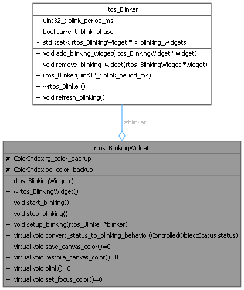

Loading...
Searching...
No Matches
rtos_BlinkingWidget Class Referenceabstract
Class that represents a blinking widget. More...
#include <rtos_widget.h>
Collaboration diagram for rtos_BlinkingWidget:

Public Member Functions | |
| rtos_BlinkingWidget (rtos_Blinker *blinker) | |
| Constructor of the RTOS blinking widget. | |
| ~rtos_BlinkingWidget () | |
| Destructor of the RTOS blinking widget. | |
| void | start_blinking () |
| Start the blinking of the widget. | |
| void | stop_blinking () |
| Stop the blinking of the widget. | |
| virtual void | convert_status_to_blinking_behavior (ControlledObjectStatus status) |
| Convert the status to blinking behavior. | |
| virtual void | save_canvas_color ()=0 |
| Save the current canvas colors. | |
| virtual void | restore_canvas_color ()=0 |
| Restore the saved canvas colors. | |
| virtual void | blink ()=0 |
| Blink the widget. | |
| virtual void | set_focus_color ()=0 |
| Show the focus of the widget. | |
Protected Attributes | |
| rtos_Blinker * | blinker |
| the blinker associated to the blinking widget | |
| ColorIndex | fg_color_backup |
| backup of the canvas colors. | |
| ColorIndex | bg_color_backup |
| backup of the canvas background colors | |
Detailed Description
Class that represents a blinking widget.
Member Function Documentation
◆ blink()
|
pure virtual |
Blink the widget.
- Note
- this method must be overloaded to define how the widget blinks.
- typically, the widget will switch between the foreground and background color, or repalce foregroung by background.
◆ convert_status_to_blinking_behavior()
|
virtual |
Convert the status to blinking behavior.
- Note
- this method defines how the widget will blink according to the status. It can be overloaded if needed.
- Parameters
-
status
Here is the call graph for this function:

◆ restore_canvas_color()
|
pure virtual |
Restore the saved canvas colors.
- Note
- this method must be overloaded to restore the canvas colors of the specific text or graphic widget
Here is the caller graph for this function:

◆ save_canvas_color()
|
pure virtual |
Save the current canvas colors.
- Note
- this method must be overloaded to save the canvas colors of the specific text or graphic widget
◆ set_focus_color()
|
pure virtual |
Show the focus of the widget.
- Note
- this method must be overloaded to define how the widget shows focus.
Here is the caller graph for this function:

◆ start_blinking()
| void rtos_BlinkingWidget::start_blinking | ( | ) |
Start the blinking of the widget.
- Note
- the widget is registered to the blinker
Here is the caller graph for this function:

◆ stop_blinking()
| void rtos_BlinkingWidget::stop_blinking | ( | ) |
Stop the blinking of the widget.
- Note
- the widget is unregistered from the blinker
Here is the caller graph for this function:

Member Data Documentation
◆ bg_color_backup
|
protected |
backup of the canvas background colors
- Note
- used to restore the background color after blinking
◆ fg_color_backup
|
protected |
backup of the canvas colors.
- Note
- used to restore the foreground color after blinking
The documentation for this class was generated from the following files:
- rtos_widget.h
- rtos_widget.cpp